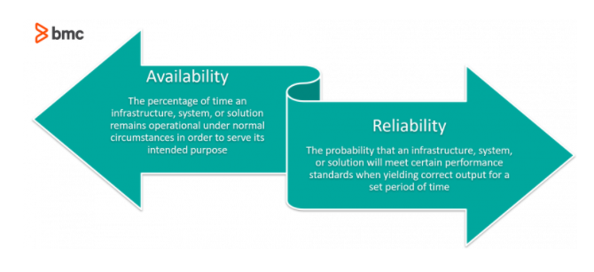
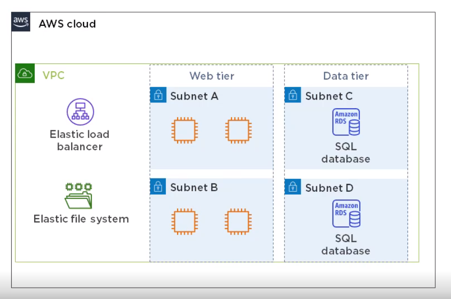
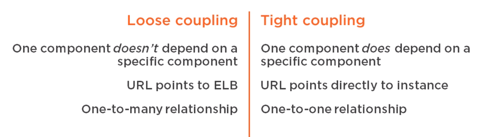
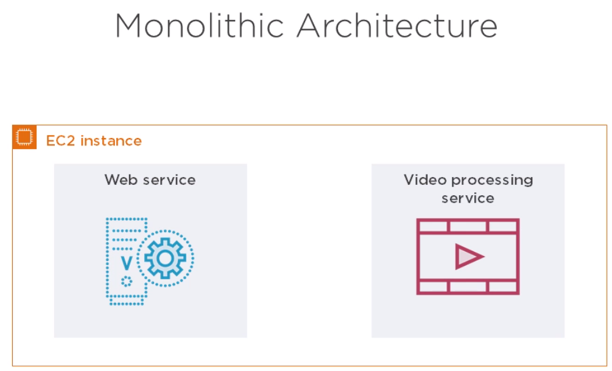
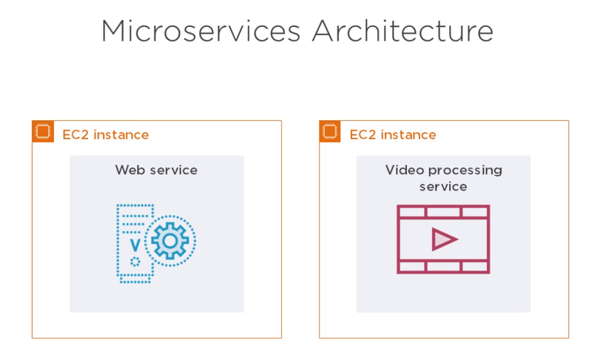
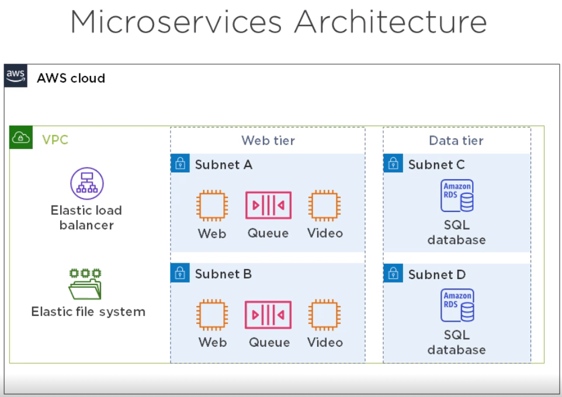
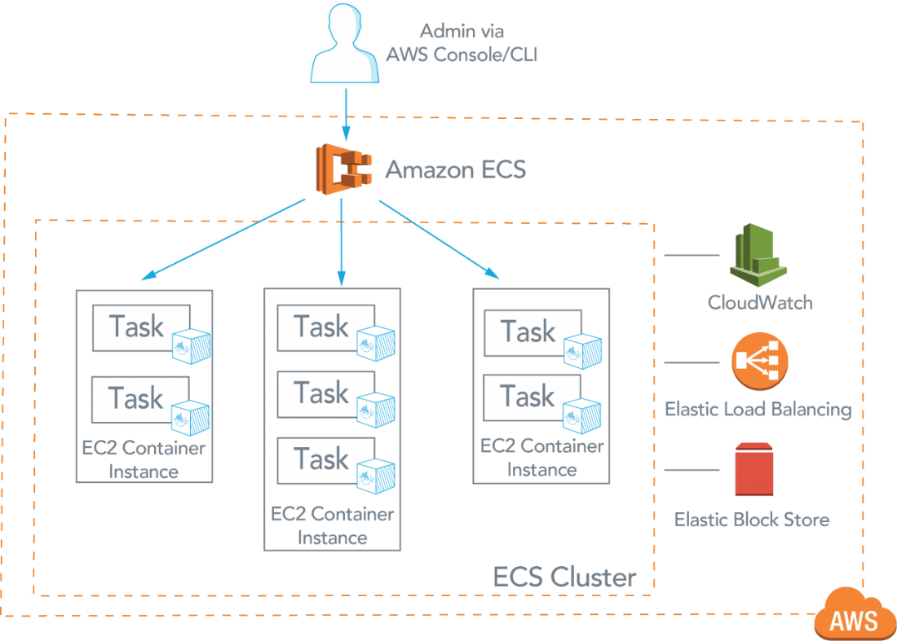
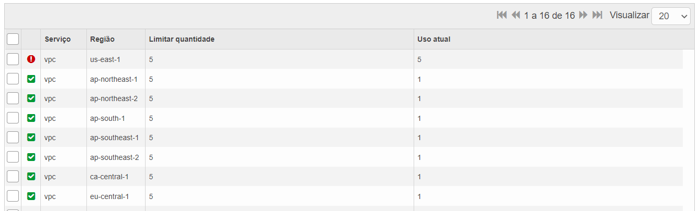

Anotações / Nuvens Públicas / AWS / SAA - C02 / Domain 1 - Design Resilient Archite
Architection for Availability
É comum a gente não saber qual a diferença entre Availability e Resilience/Reliability:
Resilience/Reliability - É a capacidade de uma aplicação se recuperar de algum problema que aconteça nela.
Availability - Availability != Uptime, é como quantificamos a Resilience de uma aplicação, é a quantidade de tempo que uma aplicação atua como o esperado, se tivermos 10 EC2 com um load balancer na frente e 5 dessas EC2 falharem, o usuario vai sentir lentidão, então ela não está “Available” da forma correta.

Calculando Availability de uma aplicação
Digamos que o SLA de sua aplicação especifique que ela necessita de 99,9% de Availability e a arquitetura de sua aplicação na AWS é a seguinte:

Para calcularmos a Availability da aplicação inteira precisamos levar em consideração qual a Availability de cada componente especificada no SLA da AWS:
- 4 EC2, Availability de 90%
- 1 ELB, Avaibility de 99,99%
- 1 EFS, Availability de 99,99%
- RDS, em multiplas availability zones tem availability de 99,95%
EC2
Como a Availability de cada EC2 é 90%, precisamos de 4 para chegarmos aos 99,9% necessarios:
Failure Rate = 10% x 10% x 10% x 10% = 0,01%
Avaibility total das 4 EC2 = 100% - 0,01% = 99,99%
ELB
Agora precisamos multiplicar a availability de todas as EC2 com a Availability do ELB:
Availability total até o momento = 99,99% x 99,99% = 99,98%
EFS
Agora precisamos multiplicar a availability das EC2 e ELB com o EFS :
Availability total até o momento = 99,98% x 99,99% = 99,97%
RDS
Agora vamos multiplicar a Availability de tudo até o momento com o RDS em multiplas AZs:
Availability total da aplicação = 99,97% x 99,95% = 99,92%
Loose Coupling

Redundancia em si não garante Availability, para isso precisamos utilizar uma arquitetura Loose Coupled, na aplicação citada acima, temos varias EC2 trabalhando em conjunto para mostrar um site, isso só é possivel graças ao ELB, com que os usuarios acessam e ele faz o proxy para cada EC2, com isso também conseguimos escalar cada parte da aplicação separadamente conseguindo melhorar a performance da aplicação caso necessario.
Simple Queue Service (SQS)
Com o SQS conseguimos fazer o Loose Coupling de Instancias EC2 (VMs), imagine uma aplicação de web que faz com que o video que enviamos pra ela fique todo azul, dentro da EC2 temos tanto a interface WEB da aplicação quanto o serviço que faz o video ficar azul, isso é chamado de aplicação monolitica.

Se separarmos esses dois processos estamos usando outro tipo de arquitetura chamada Micro Serviços:

A vantagem de utilizarmos microserviços é que conseguimos fazer upgrade do software separadamente, um update necessario em uma parte da aplicação não afetará a outra, conseguimos também escalar só uma parte da aplicação e conseguimos ter mais availability por conta da redundância dessa arquitetura.
Mas onde o SQS entra nessa historia ?
O SQS é um serviço da AWS em que criamos uma fila de mensagens, no caso da aplicação de video acima, o web service vai mandar a mensagem para a fila e o video processing service vai pegar essa mensagem e processar o video, assim fazendo a comunicação entre os dois serviços.

Elastic Container Service
Se estivermos usando uma arquitetura de micro serviços, em uma instancia EC2 só conseguimos rodar um serviço, para resolver isso e conseguirmos isolar o serviço da instancia foi criado o Container, pense no container como varias “VMs” rodando dentro de uma VM, cada uma totalmente isolada da outra, com isso conseguimos ter uma instancia rodando tanto um container de interface WEB, quando o de processamento de video, mas elas estão desacopladas, um erro em um container não afeta o outro.
Com isso conseguimos ter mais availability, pense no caso de duas EC2 rodando um serviço, caso uma caia, você pode ter lentidão na aplicação, agora com Containers, caso um container falhe, você tem varios dentro da mesma instancia, a aplicação não vai perder performance, além de que você consegue colocar diversos checks do Docker para ver a saude do container, caso ele falhe o docker restarta ele.

Quando criamos um cluster ECS escolhemos quantas instancias EC2 vamos utilizar nele(Isso se você não estiver usando Fargate), quando ele estiver criado, vamos criar os serviços e escolher quantas replicas por EC2 Instance vamos querer, essas replicas são chamadas de tasks(containers).
Cloud Native Application
Uma aplicação Cloud Native nada mais é do que uma aplicação escrita para utilizar os serviços da nuvem, no caso AWS, são serviços que não estão disponiveis no data center tradicional, não conseguimos baixar um pacote em algum server linux e pronto temos o mesmo serviço que a AWS prove.
Um exemplo de aplicação Cloud Native seria a mesma que estamos utilizando desde o inicio:
Static Web-Interface e Video Storage - Amazon S3 Bucket
Video Processing - Amazon Lambda
Database - DynamoDB
Todos esses são serviços que vou explicar mais para frente, mas todos eles são serviços regidos pela AWS, você não precisa pensar em NADA do hardware, isso não existe em um DC tradicional.
Trusted Advisor
Não podemos criar serviços da AWS ilimitados, todas as contas possuem um limite de recursos para cada tipo de serviço e por região, o padrão por exemplo para VPC é 5 VPCs por região, por conta.
Para consultar quanto de recursos ainda podemos criar em certa região para certa conta, basta acessar a pagina do Trusted Advisor.

Você pode pedir um aumento da quantidade para a AWS.